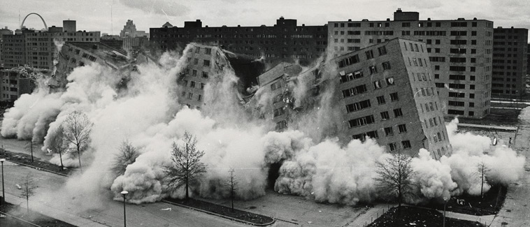

Demolition of Pruitt-Igoe (1972-76)
Aerial View: (1951-55)
One fault that lies within the failure of Pruitt-Igoe was the lack of acknowledging hardships due to race and class. Pruitt-Igoe represents the harm that architecture can inflict on people, both as a concept and physical enviornment. This project allowed for the growth of segregation and structural inequalities within housing rights, while its visibility and associated connotations supported biases that enabled stereotypes and racism. Ideologies of Modernism are also present here as its designers were imposing a "modern" lifestyle onto its inhabitants. These new narratives and structures of housing during the 1950s serve as a critical framework of understanding this project, as being "modern" is often equated to being "humane".
This map shows the various public parks that are located within Missouri along with the median household income by zip code, which are distinguished by the orange circles. This data has been complied from IPUMS NHGIS and includes census information from 2015-2019. Click to view the Black population or the White population.
Overall, modernization has brought along ideals of uniformity and aesthetic values that undermine the true nature and identity of people. Crockett, in People Before Highways, makes the key argument that Modernism embodies the intersection of politics and aesthetics, while inherently eradicating race and class. One of the most important concepts that she addresses is the notion that the control for space is endlessly tied to politics. This idea enforces the importance of rights to public space and accessibility. Gandy, in Concrete and Clay, additionally makes a similar argument regarding the power of spatial aspects in social movements. His most crucial argument suggests that the transformation of landscape through social and political movements is more impactful than those that solely rely on aesthetics. Through this argument and Crocketts criticism of Modernism, one can understand how the importance of aesthetics within Modernism has hindered the movements towards equity and justice.
Architecture can be both an abstraction or extension of the body. In chapter 6 of Hybrid Modernities, Morton discusses the ways in which architectural styles at the Colonial Exposition have been subjected to exploitation and appropriation by its creators. This main idea follows the logic that architecture can be seen as a mirror to people and their cultural traditions, which both poses a platform for supporting these values, but also a method in their subjectification. Notions of identity can also be extrapolated from this analysis. If one accepts the idea that architecture can represent a certain culture or society, it can be argued that buildings have the ability to signify the physical manifestations of the values belonging to a particular group of people. Thus, people and architecture share a codependent yet complex relationship to each other in similar ways that race and the body are intertwined.
The role of aesthetics within landscape is additionally critical to understand, especially if one acknowledges its connection to identity. The comparison between the Black Belt, Chinatown, and the U.S.-Mexico Border brings up crucial points within their subjectification. Although formed out of different circumstances the associations and structures formed around them highlight the different stereotypes that surround each group of people. Specifically, there is a capitalistic undertone to each of these associations. For example, many interview accounts in Selections from Black Metropolis show how Black people are often objectified for their labor, while a similar trend can be understood in "The Homeland, Aztlan". This however is not the case described in "The Idea of Chinatown". Anderson argues that the creation of the idea behind Chinatown instilled associations of unsanitary and undesirable lifestyles, which contrasts sharply with the more tangible landscape implications that are found in the Black Belt and U.S.-Mexico Border. These initial differences within subjectification have led to further pitfalls and divides between different racial groups today.
The institutionalization of architectural knowledge and the selfishness of architects has enabled the influence of personal implications on aesthetic and systematic design choices, which have led to larger social and political conflicts. The lack of localized architects draws conflict within communities, as designers do not fully understand what people desire. The idea of architects being seen as “celebrities” or designing for the sole purpose of impressing their colleagues points to another irony within architecture. The combination of architecture as an elitist profession and the “disciplinary alibi” points to the root issue of architects failing to engage themselves in relationship to communities and their identity.